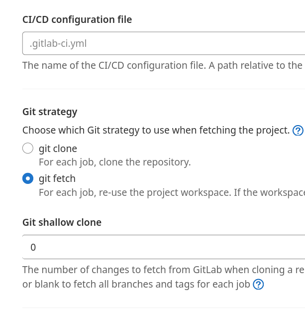

Một đoạn code đơn giản, đã chạy ít nhất 5 năm trên gitlab.com, khi mang về gitlab CE tự host, dùng cùng gitlab CI runner, chạy CICD job lại fail.
$ git diff --name-only origin/master...HEAD
...
fatal: ambiguous argument 'origin/master...HEAD': unknown revision or path not in the working tree.
Use '--' to separate paths from revisions, like this:
'git <command> [<revision>...] -- [<file>...]'
...
Không có origin/master, kể cả master cũng không có.

Photo by Abdulaziz Alfawzan on Unsplash
Hóa ra bên trên output của GitLab CI job có 1 dòng
Fetching changes with git depth set to 20...
Config trên GitLab > CICD Settings của project, mặc định sau khi cài GitLab CE 15.4.2, giá trị Git shallow clone là 20.
Trên GitLab.com, giá trị này mặc định là không set (blank).

The number of changes to fetch from GitLab when cloning a repository. Lower values can speed up pipeline execution. Set to 0 or blank to fetch all branches and tags for each job
Kết luận
Code chạy 5 năm, trên cùng 1 chỗ, vẫn fail, vì config từ web thay đổi.
Hết.